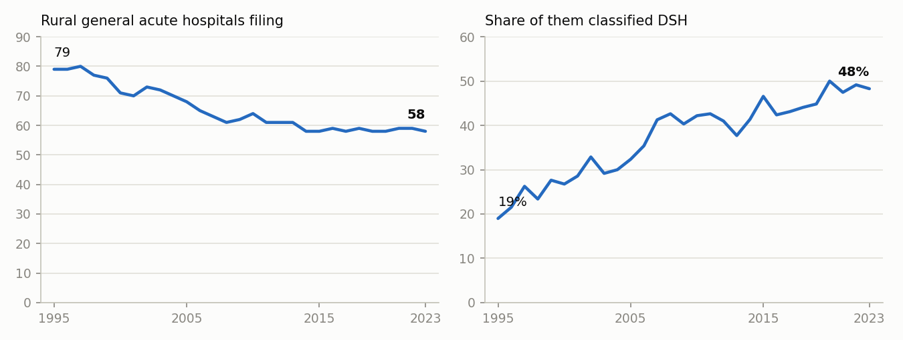

Research · 2024 – 2025
Revenue Trends in Rural Hospitals, California 1995–2023
Twenty-nine years of state hospital financial filings, read as one question: what are California's rural hospitals actually living on now, and how many of them are left? The answer is outpatient revenue and Disproportionate Share funding, in a shrinking set of facilities.
1The revenue shift
Each hospital reports gross patient revenue split into inpatient and outpatient. Averaged across rural hospitals, the outpatient share rose from 43% in 1995 to 68% in 2023. Teaching and other general acute hospitals moved the same way but ended near 40%, so the gap widened rather than closed: rural hospitals are now the most outpatient-dependent group in the state.

GR_OP_TOT / GR_PT_REV across hospitals in each group and year. Produced by code/build_panel.py.2Fewer hospitals, and more of them on Disproportionate Share funding
Over the same period the count of rural general acute hospitals filing fell from 79 to 58, while the share classified as Disproportionate Share Hospitals, the designation for facilities serving a high proportion of low-income patients, went from 19% to 48%. Those two lines together are the finding: the remaining hospitals lean more heavily on a funding stream meant for hospitals under exactly this kind of pressure.

code/build_panel.py; every figure is listed with its rule in build_panel_output/headline_numbers.csv.3Capacity and access, 2002 against 2023
| Between 2002 and 2023 | Rural | Non-rural |
|---|---|---|
| Hospitals | −21% | −9% |
| Licensed beds | −21% | −3% |
| Long-term care beds | −24% | −45% |
| Long-term care patient days | −31% | −41% |
| Long-term care average length of stay | +73% | +125% |
| Emergency visits | +30% | +43% |
| Clinic visits | +151% | +37% |
| Inpatient surgeries | −65% | −25% |
| Purchased inpatient days | 650 → 53,032 | +82% |
Comparable hospitals only, the HCAI classification that excludes Kaiser facilities, psychiatric health facilities, state hospitals and long-term-care-emphasis facilities. This is the universe the original Excel exhibits used; matching it was what made the rewritten code agree with them cell for cell.2
4Where the closures land
Of the 498 general acute hospitals that filed at some point between 1995 and 2023, 163 stopped filing before 2023, 29 of them rural. The wording matters: a merger, a changed facility number and a conversion to another care type all look identical in this data, so the output says last year filed rather than closed.
The access consequence is countable. In 2023, twelve California counties have exactly one hospital in the filings and it is a rural one: Amador, Calaveras, Colusa, Del Norte, Glenn, Kings, Lassen, Mariposa, Mono, San Benito, Trinity and Tuolumne.3
5From a spreadsheet to a pipeline
The original analysis was built in Excel, with the notebook covering only part of it. Three figures in the project README could not be produced by any cell that ran, and the 2023 outpatient share appeared as 67% in one summary table and 68.23% in the notebook's own output. Rewriting the analysis as code settled that: 68.2% is what the stated rule produces, and the README now follows the code.
python code/build_panel.py # 29 yearly files → panel + headline figures with their rules
python code/exhibits.py # the 2002 vs 2023 exhibits, previously hand-built in Excel
python code/closures_and_hsa.py # exits and outpatient growth by health service areaEach script writes a table of the figures it produces next to the rule that produces each one, so a number on this page can be traced to a line of code and a column of the source file. A second implementation written from the raw files, without reading these scripts, reproduced every headline figure.
6What this data cannot tell you
- A facility number disappearing is not proof of a closure.
- Revenue here is gross patient revenue, charges rather than collections, so the outpatient share measures where the billing moved, not where the money ended up.
- Rural status is HCAI's own classification, carried in the filing; it is not a geographic recalculation.
Sources for the numbers on this page
build_panel_output/headline_numbers.csv: each figure with the rule that produces it; built from the HCAI files bycode/build_panel.py.exhibits_output/capacity.csv,utilization.csv,length_of_stay.csv, built bycode/exhibits.py; they reproduce the hand-built workbook cell for cell.exhibits_output/headline_checks.csvandclosures_hsa_output/last_year_filed.csv, built bycode/exhibits.pyandcode/closures_and_hsa.py.- Source data: California Department of Health Care Access and Information, Hospital Annual Financial Data: Selected Data & Pivot Tables, one workbook per year, downloaded from the state open data portal. Listed in the repository's
data/README.md.